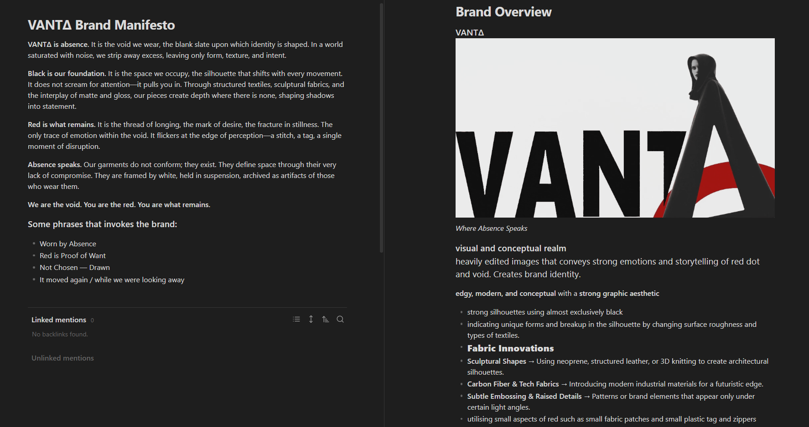
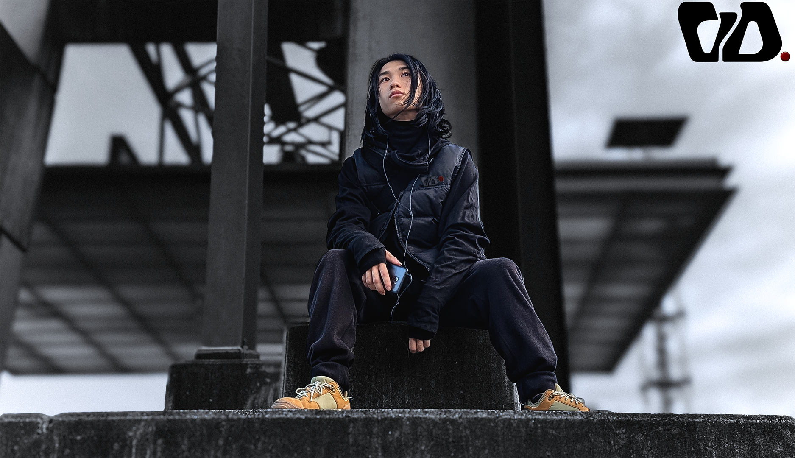
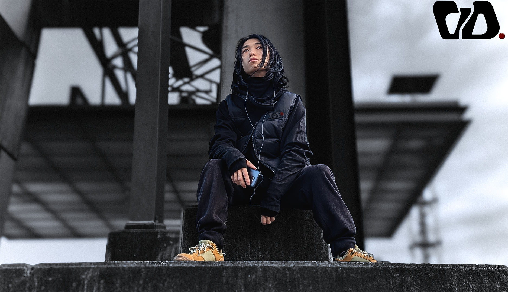
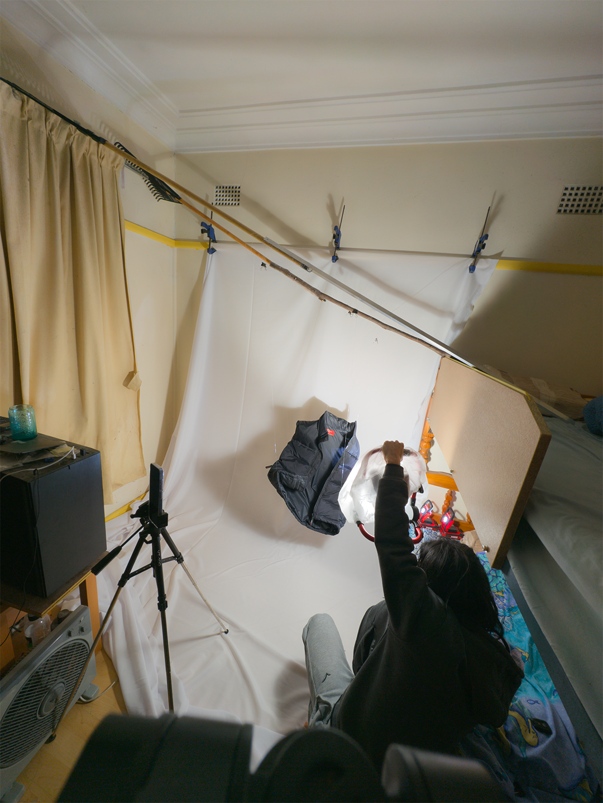
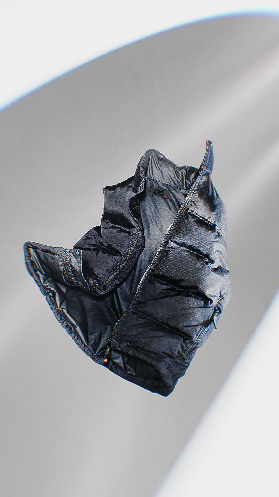

Behind the Scenes
-
Brand Identity &
Creative DirectionSetting the identity of the brand. It needed to be authentic and unapologetically me. I am the sole creator. For this project I alone represent the brand.
 -
Graphic Design
Using Adobe Illustrator to design Logo that represents the essence of the brand.


-
3D Rendering &
Product MockupsLeveraging my background in 3D modeling, texturing, and animation, I create short form videos and product mockups from scratch for social media and website.
-
Model Photography
A tripod, remote trigger, phone and a strong vision was all I needed. These clothes are mine and so naturally fit and suit my style. Photos edited in photoshop.
 

-
Product Photography
Converting my bedroom into a photo studio, using DIY solutions, to achieve the final look and quality I envisioned.
  -
Web Design &
DevelopmentProgramming and website building with no prior knowledge was one of the biggest hurdles on this project. But we got there.